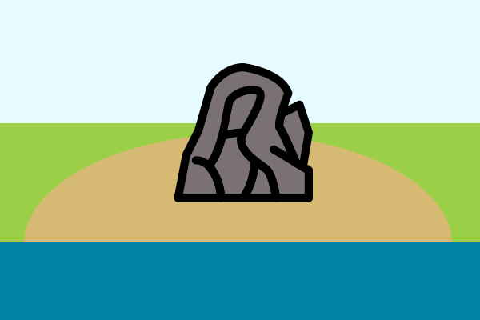

閲覧
Viewing
A zen garden is usually relatively small, surrounded by a wall, and is often meant to be seen while seated from a single viewpoint outside the garden, such as the porch of the hojo
Learn more about Viewing

砂利
砂利
Gravel
Gravel is usually used in zen gardens because it is less disturbed by rain and wind; Shirakawa, which is a black-speckled granite from Kyoto, was prized for its ability to hold grooves
Learn more about Gravel
象徴主義
Symbolism
In the Japanese rock garden, rocks sometimes symbolize mountains (particularly Horai or they can be boats or a living creature, usually a turtle, or a carp
Learn more about Symbolism